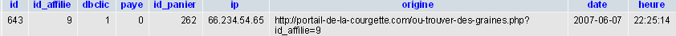
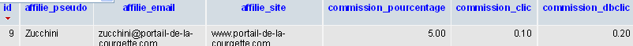

Dans le commerce électronique (e-commerce), il peut être intéressant d'avoir ses produits visibles sur d'autres sites partenaires. En échange, ces sites affiliés attendent une rémunération. Si la rémunération au clic est très répandue, elle présente un inconvénient majeur : un internaute qui clique n'est pas forcément un internaute qui achète. L'affiliation vient pallier ce défaut en ne prenant en compte que les internautes "qualifiés". On peut alors verser une commission sur le montant du panier encaissé.
Vous vous dites certainement qu'un script d'affiliation est difficile car c'est un concept propre aux sites marchands, et que cela est donc réservé aux professionnels. Détrompez-vous : vous êtes bien sur le Site du Zér0 et à ce titre (car c'est un titre honorifique), vous devriez comprendre ce qui suit sans trop de problèmes. En plus de connaître les langages PHP et SQL (ouf ! vous êtes encore sur le bon site pour cela), il vous suffit d'avoir bien compris le principe du script.
Supposons donc que vous ayez une boutique en ligne et que vous vendiez... des graines de courgettes. Votre site n'est pas encore connu, et vous envisagez de lancer un "programme d'affiliation" afin que des sites internet, spécialisés dans la courgette en particulier, parlent de votre nouveau site.
Identifier un internaute provenant d'un site affilié
Dans un premier temps, il faut penser à installer un script présent sur toutes vos pages qui vous permettra d'identifier la provenance de vos internautes.
Le tag
Nous allons donc utiliser un autre indicateur, fiable à 100 %: le tag. Rassurez-vous, cela n'a rien à voir avec les graffitis, et il ne faudrait pas non plus les confondre avec les "nuages de tags" qu'on voit dans le ciel de nombreux sites...
Ainsi, dans le lien http://www.graines-de-courgette.com?produit_id=21&id_affilie=9, parmi les deux variables transmises par la méthode GET, c'est id_affilie=9 qui est le tag : cela indique que l'internaute est venu du site affilié n°9.
En supposant que le site www.le-portail-de-la-courgette.com soit justement le neuvième affilié à notre site, le webmaster de ce site devra "tagger" ses liens pointant vers notre site. À nous de lui indiquer le protocole : le nom du tag (ici, id_affilie) et... son identifiant (ici, 9).
Transmettre le tag
Rassurez-vous, on ne va pas trimballer ce tag dans l'url de toutes les pages visitées par l'internaute (eh oui, ça y est, nous avons notre premier internaute, il est venu par le site n°9). Nous allons juste créer la variable $_SESSION['affiliation']. Je rappelle que la variable superglobale $_SESSION est créée par le serveur et qu'elle conserve de page en page ce que vous voulez dedans.
La présence de cette variable nous indique donc que notre internaute est un internaute provenant d'un site partenaire. Nous allons donc enregistrer dans une table cette heureuse visite.
Une table
affiliation
C'est la table qui enregistrera les visites comptabilisées comme issues du programme d'affiliation. On y stockera donc l'identifiant de l'affilié, l'identifiant du panier si c'est le cas, et le statut de la commande. Vous pouvez enregistrer davantage de choses (date et heure, url de provenance) mais le plus important, ce sont ces trois variables qui vous permettront de restituer ce qu'a fait votre internaute.
Une table
affilies
Nous allons aussi créer une table rien que pour les participants au programme d'affiliation, c'est-à-dire nos sites affiliés. On y stockera bien sûr un pseudo, l'url du site et éventuellement des coordonnées standard par rapport à une inscription. C'est un peu comme de nouveaux membres. Nous allons aussi rajouter un champ commission si nous avons besoin de fixer des taux différents selon les affiliés.
Bon, allez, on y va : on s'intéresse d'abord à la table affiliation. Ce n'est peut-être pas chronologique (comment recevoir des visites depuis des sites affiliés si personne n'est affilié à votre site ?) mais c'est plus pédagogique.
Notre table affiliation
Alors voilà : c'est plus simple de vous donner le code :
CREATE TABLE `affiliation` (
`id` mediumint(9) NOT NULL AUTO_INCREMENT,
`id_affilie` mediumint(9) NOT NULL,
`dbclic` smallint(4) NOT NULL,
`paye` tinyint(4) NOT NULL,
`id_panier` mediumint(9) NOT NULL,
`ip` varchar(15) NOT NULL,
`origine` varchar(250) NOT NULL,
`date` date NOT NULL,
`heure` time NOT NULL,
PRIMARY KEY (`id`)
)
Le champ id nous permet d'identifier la visite. id_affilie stockera la valeur du tag, c'est-à-dire le numéro de l'affilié. J'ai rajouté des champs comme "dbclic (pour savoir si la personne a au moins vu deux pages sur le site, ça voudra dire qu'il était un peu intéressé par les courgettes...), paye (qui vaudra 1 si la personne atteint avec succès la page de validation de paiement), id_panier (qui contient l'identifiant du panier si l'internaute en constitue un).
Le script affiliation.php (à appeler sur toutes vos pages)
Inclure le fichier
J'espère que vous avez déjà un petit include "inc/initialisation.php" ou un autre sur vos pages car sinon, il va falloir penser à rajouter partout un petit include/affiliation.php. Si vous avez beaucoup de pages, ça peut vous prendre du temps.
Si c'est le cas, vous pouvez à la fin de ce fichier rajouter include inc/affiliation.php. Eh oui : rien ne vous empêche de mettre du include dans un fichier lui-même inclus ! Ce qui compte, c'est d'appeler le fichier au bon endroit. Supposons que notre fichier affiliation.php soit dans le dossier inc. Qu'allons-nous y mettre ? Vous le saurez au fil de ce tuto...
On en a un ! On en a un !
Allez : on est dans le cas où l'on a récupéré un tag. Je vous rappelle que c'est quelque chose comme &id_affilie=9. Le but est alors d'insérer cette visite dans notre table affiliation. À ce moment, on crée la variable $_SESSION['affiliation'] qui contiendra l'id de cette visite. En PHP, la commande mysql_insert_id(), qui ne prend aucun argument, permet justement de récupérer l'id du dernier élément entré. On en profite pour créer deux autres variables dans $_SESSION qui nous seront utiles par la suite.
<?php
if (isset($_GET['id_affilie']) AND !isset($_SESSION['affiliation'])){
$sql_temp='INSERT INTO affiliation (id,id_affilie,date,heure,ip,origine) VALUES ("","'.$_GET['id_affilie'].'","'.date("Y-m-d").'","'.date("H:i:s").'","'.$_SERVER['REMOTE_ADDR'].'","'.$_SERVER['HTTP_REFERER'].'")';
$reponse_temp=mysql_query($sql_temp);
$_SESSION['affiliation']=mysql_insert_id();//on crée la variable superglobale $_SESSION['affiliation'] avec l'id correspondant dans la table affiliation
$_SESSION['affiliation_nbclic']=0;
$_SESSION['affiliation_panier']=false;
}
?>
Et ensuite, on en fait quoi ?
Remarquez que j'ai mis une autre condition dans l'insertion : il ne faut pas que la variable $_SESSION['affiliation'] existe. C'est la signification de !isset($variable) qui veut dire "si $variable n'existe pas". Ainsi, on évite des cas bizarres où l'internaute actualiserait sa page, ou serait de nouveau venu par le site affilié. Il n'y a pas de raison pour que ce genre de bizarrerie compte pour une deuxième visite. Maintenant que cette variable de session existe, il ne reste plus qu'à dire ce que l'on fait au fur et à mesure des événements qu'on souhaite détecter. Alors, après avoir vérifié que cet internaute provient d'un site affilié :
<?php
if (isset($_SESSION['affiliation'])){
$_SESSION['affiliation_nbclic']++; // On rajoute +1 clic
//tests des événements choisis
}
?>
Le double clic (on change le statut de dbclic : 1=oui) :
<?php
if ($_SESSION['affiliation_nb_clic'])==2{
$sql_temp='UPDATE affiliation SET dbclic=1 WHERE id='.$_SESSION['affiliation'];
mysql_query($sql_temp);
}
?>
Détection du panier :
<?php
if (isset($_SESSION['panier_id']) AND (!$_SESSION['affiliation_panier'])){
$sql_temp='UPDATE affiliation SET id_panier='.$_SESSION['panier_id'].' WHERE id='.$_SESSION['affiliation'];
mysql_query($sql_temp);
$_SESSION['affiliation_panier']=true;
}
?>
Détection de la validation de commande :
<?php
if (isset($_GET['retour_paiement']) AND $_GET['retour_paiement']=='valide'){
$sql_temp='UPDATE affiliation SET paye=1 WHERE id='.$_SESSION['affiliation'];
mysql_query($sql_temp);
$_SESSION['affiliation_panier']=true;
?>
}
Ici, on a supposé que lorsque le paiement est validé par la banque, le site sécurisé de la banque a renvoyé vers une page dont l'url serait par exemple : retour.php?retour_paiement=valide. En effet, quand vous configurez un module de paiement en ligne (y compris Paypal), vous pouvez devriez renseigner cette page de retour.
Et le code complet affiliation.php
<?php
if (isset($_GET['id_affilie']) AND !isset($_SESSION['affiliation'])){
$sql_temp='INSERT INTO affiliation (id,id_affilie,date,heure,ip,origine) VALUES ("","'.$_GET['id_affilie'].'","'.date("Y-m-d").'","'.date("H:i:s").'","'.$_SERVER['REMOTE_ADDR'].'","'.$_SERVER['HTTP_REFERER'].'")';
$reponse_temp=mysql_query($sql_temp);
$_SESSION['affiliation']=mysql_insert_id();
$_SESSION['affiliation_nbclic']=0;
$_SESSION['affiliation_panier']=false;
}
if (isset($_SESSION['affiliation'])){
$_SESSION['affiliation_nbclic']=$_SESSION['affiliation_nbclic']+1;
//détection du nb de clics
if ($_SESSION['affiliation_nb_clic'])==2{
$sql_temp='UPDATE affiliation SET dbclic=1 WHERE id='.$_SESSION['affiliation'];
mysql_query($sql_temp);
}
//détection du panier
if (isset($_SESSION['panier_id']) AND (!$_SESSION['affiliation_panier'])){
$sql_temp='UPDATE affiliation SET id_panier='.$_SESSION['panier_id'].' WHERE id='.$_SESSION['affiliation'];
mysql_query($sql_temp);
$_SESSION['affiliation_panier']=true;
}
//détection de la validation de commande
if (isset($_GET['retour']) AND $_GET['retour']=='valide'){
$sql_temp='UPDATE affiliation SET paye=1 WHERE id='.$_SESSION['affiliation'];
mysql_query($sql_temp);
$_SESSION['affiliation_panier']=true;
}
}
?>
Regardons dans la table de MySQL ce qui s'est passé (on suppose que l'internaute venant du site www.le-protail-de-la-courgette.com a fait un panier, le 262e, mais qu'il n'a finalement pas commandé :'( ).

Ne reste plus qu'à fournir à nos affiliés une interface où ils pourront observer leurs résultats.
Une table affilies, c'est un peu comme une table membres. On va faire un formulaire pour demander le nom du site à affilier. On attribue ensuite un numéro d'identifiant à cet affilié (ça lui servira pour le tag à mettre sur ses liens).
La table affilies
CREATE TABLE `affilies` (
`id` mediumint(9) NOT NULL AUTO_INCREMENT,
`affilie_pseudo` varchar(30) NOT NULL,
`affilie_email` varchar(100) NOT NULL,
`affilie_site` varchar(100) NOT NULL,
`commission_pourcentage` decimal(8,2) NOT NULL DEFAULT '5.00',
`commission_clic` decimal(8,2) NOT NULL DEFAULT '0.00',
`commission_dbclic` decimal(8,2) NOT NULL DEFAULT '0.00',
PRIMARY KEY (`id`)
)
Ici, on a vu un peu large car la table permet à un membre d'affilier plusieurs de ses sites à votre boutique en ligne. Dites-vous bien que ce qui repère un site affilié, c'est le tag, ce qui correspond au champ id dans notre table affilies.
Un premier affilié
Allez : supposons que ce cher Zucchini ait affilié son site d'informations sur la courgette à notre site qui vend des graines de courgette. Dans la table affiliation, vous aurez quelque chose comme ceci :

Encore une fois, je ne m'occupe pas ici de faire le formulaire d'inscription. Je vous donne juste ce petit bout de code pour réaliser l'insertion de l'affilié.
<?php
$sql_temp='INSERT INTO affilies (id, affilie_pseudo, affilie_email, affilie_site) VALUES ("","'.$_SESSION['pseudo'].'", "'.$_POST['affilie_email'].'", "'.$_POST['affilie_site'].'")';
mysql_query($sql_temp);
$_SESSION['id_affilie']=mysql_insert_id();
echo'
Bravo ! Votre site <strong>'.$_POST['affilie_site'].'</strong> est désormais affilié à <em>www.graines-de-courgette-bio.com</em> !<br />
Votre numéro d\'affilié est '.$_SESSION['id_affilie'].'<br />
Il vous suffit donc de rajouter ce tag dans vos URL :<br />
<em>&id_affilie='.$_SESSION['id_affilie].'</em>';
?>
Quelques petites explications s'imposent, du coup. Comme précédemment, on a utilisé mysql_insert_id() pour connaître le numéro de notre nouvel affilié. Ensuite, on a créé une variable session nommée $_SESSION['id_affilie'] qui a la valeur de ce numéro d'identifiant. Ainsi, on sait que c'est notre affilié qui est connecté et qu'il cherche vraisemblablement à consulter ses résultats. Bref, en créant cette variable, c'est comme lorsque l'on crée une variable session pour dire que le membre est connecté.
On va donc lui proposer une petite interface pour voir le trafic qu'il nous renvoie.
Voir ses résultats
C'est très simple, rappelez-vous, la table affiliation comportait un champ id_affilie.
<?php
$sql='SELECT * from affiliation WHERE id_affilie='.$_SESSION['id_affilie'];
$reponse=mysql_query($sql);
echo '<table>
<caption>vos résultats '.$_SESSION['affilie_site'].'</caption>
<tr><th>date</th><th>origine</th><th>double</th><th>paye</th></tr>';
while ($donnees=mysql_fetch_array($reponse)){
echo '
<tr>
<td>'.$donnees['date'].' à '.$donnees['heure'].'</td>
<td>'.str_replace('http://','',$donnees['origine']).'</td>
<td>'.$donnees['dbclic'].'</td>
<td>'.$donnees['paye'].'</td>
</tr>';
}
echo '</table>';
?>
Là, vous avez tout, mais c'est un peu brut...
Il peut être plus intéressant de lui dire où en est son compte.
<?php
$nb_clics_simples=0;
$nb_clics_doubles=0;
$montant_paniers=0;
//comptez les clics simples
$sql='SELECT id from affiliation WHERE id_affilie='.$_SESSION['id_affilie'].' AND db_clic=0';
$reponse=mysql_query($sql);
$nb_clics_simples=mysql_num_rows($reponse);
//comptez les clics doubles
$sql='SELECT id from affiliation WHERE id_affilie='.$_SESSION['id_affilie'].' AND db_clic=1 AND paye=0';
$reponse=mysql_query($sql);
$nb_clics_doubles=mysql_num_rows($reponse);
//comptez les paniers payes
$sql='SELECT affiliation.id_panier, paniers.total from affiliation LEFT JOIN paniers ON paniers.id=affiliation.id_panier WHERE id_affilie='.$_SESSION['id_affilie'].' AND affiliation.paye=1';
$reponse=mysql_query($sql);
while ($donnees=mysql_fetchh_arry($reponse)){
$montant_paniers+=$donnees['total'];
}
?>
La dernière requête utilise une jointure. Maintenant qu'on a récupéré ceci, il est facile de calculer les sommes dues :
Ce script est à modifier, à enrichir, à adapter à vos besoins. Je me suis efforcé de prendre trois paramètres pour que vous voyiez ce qui est possible (rémunération au clic, au double clic, à la commission). Il reste à lui ajouter un système de gestion des factures, de remise à zéro des compteurs pour en faire un script complet. Peut-être que vous en serez l'auteur...